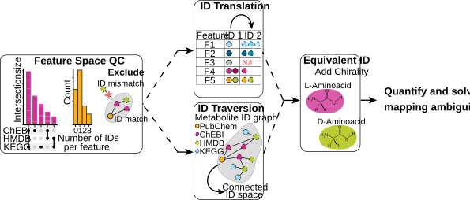
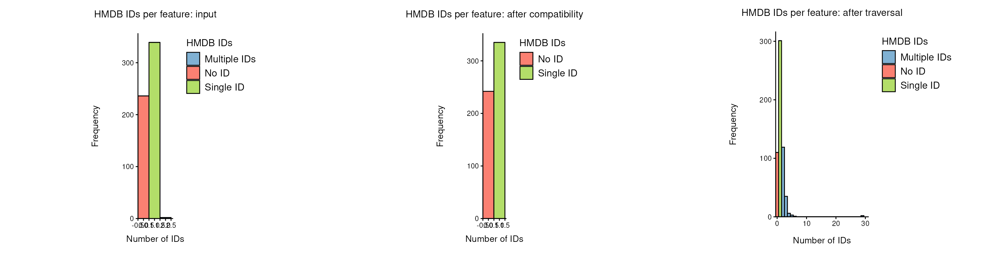
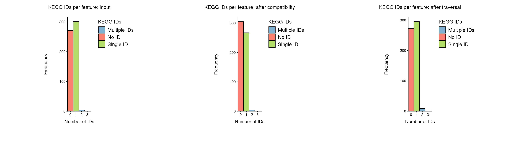
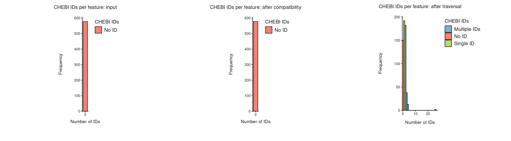
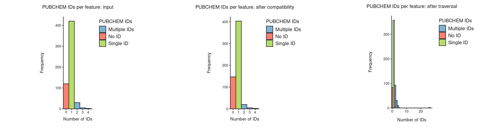

ID Processing Workflow
Jannik Franken
Heidelberg UniversitySource:
vignettes/pkgdown/id-processing-workflow.Rmd
id-processing-workflow.RmdThis vignette demonstrates the id_processing() workflow
for feature metadata in MetaProViz. The function can
quantify the current ID space, perform automatic seed-ID compatibility
handling, and expand the ID space through graph traversal.
The examples use the tissue_meta dataset that ships with
MetaProViz. It contains the feature metadata of the ccRCC tissue
metabolomics study by Hakimi et al.,
where each metabolite is annotated with IDs from several databases,
pathways and other feature information. Compatibility between the seed
IDs is checked and resolved automatically by
seed_id_compatibility_check(), so the IDs need no manual
cleaning first.
Fig. 1 gives an overview of the steps id_processing()
runs. Each of the workflows below enables a different combination of
these steps: inspection only, compatibility check, translation, or
traversal.

id_processing() workflow.The step Equivalent ID in Fig. 1, which adds the IDs of
stereoisomers (e.g. D- next to L-amino acids), is not part of
id_processing() yet. It is currently run separately with
equivalent_id() on the result of
id_processing(), as shown in the Sample
Metadata Analysis vignette.
The workflow-managed identifier namespaces are currently
HMDB, KEGG, CHEBI, and
PUBCHEM. These columns are treated as the canonical
ID-space columns, while other metadata columns such as names, pathway
classes, or platform information are preserved across all workflow
stages. tissue_meta has no CHEBI column;
id_processing() adds it as an empty column, which the
traversal later fills.
Some features have more than one ID per namespace, stored in a single
cell. id_processing() splits these cells using one
delimiter for all ID columns, so all ID columns must use
the same separator. In tissue_meta this is not the case:
multiple HMDB and KEGG IDs are separated by
commas, whereas multiple PUBCHEM IDs are separated by
semicolons:
multi_id <- tissue_meta %>%
select(Metabolite, HMDB, KEGG, PUBCHEM)
bind_rows(
multi_id %>% filter(grepl(",", HMDB) | grepl(",", KEGG)) %>% head(4),
multi_id %>% filter(grepl(";", PUBCHEM)) %>% head(2)
) %>%
distinct() %>%
preview_table(caption = "Features with multiple IDs in one cell.")| Metabolite | HMDB | KEGG | PUBCHEM |
|---|---|---|---|
| celecoxib | HMDB05014 | D00567,C07589 | 2662 |
| dimethylarginine (SDMA + ADMA) | HMDB01539,HMDB03334 | C03626 | 123831 |
| epinephrine | HMDB00068 | D00095,C00788,D02149 | 5816 |
| lipitor | HMDB05006 | D00887,C06834 | 60823 |
| 3-methyl-2-oxovalerate | HMDB03736 | C00671 | 439286; 440877; 6857401 |
| 3-methylhistidine | HMDB00479 | C01152 | 92105; 64969 |
We therefore harmonise the separators to semicolons before running
the workflow, and set delimiter = ";" in all calls below.
We also remove the unnamed features (e.g. X - 12345), which
have no IDs:
Tissue_MetaData <- tissue_meta %>%
filter(!grepl("^X\\s*-\\s*\\d+$", Metabolite)) %>%
mutate(across(c(HMDB, KEGG), ~ gsub(",\\s*", "; ", .x)))Inspection-only workflow
An inspection-only run quantifies the current identifier coverage and overlap structure without changing the feature metadata. The call and its result-inspection code are shown below for reference, but are not evaluated in this vignette.
id_default <- id_processing(
data = Tissue_MetaData,
id_types = c("HMDB", "KEGG", "CHEBI", "PUBCHEM"),
delimiter = ";",
run_compatibility_check = FALSE,
handle_partially_compatible = TRUE,
handle_completely_incompatible = TRUE,
completely_incompatible_priority = c("HMDB", "CHEBI", "PUBCHEM", "KEGG"),
run_translation = FALSE,
translation_from = NULL,
translation_to = NULL,
translation_summary = FALSE,
run_traversal = FALSE,
edge_table = NULL,
compare_name_col = "Metabolite",
save_plot = NULL,
save_table = NULL,
print_plot = FALSE,
verbose = FALSE,
path = NULL
)
names(id_default)
names(id_default$Data)
names(id_default$Plot)
names(id_default$Workflow)
preview_table(utils::head(id_default$Data$id_count_summary, 10L))
preview_table(utils::head(id_default$Data$compare_pk_summary_by_stage$input, 10L))
preview_table(utils::head(id_default$Data$count_id_tables_by_stage$input$HMDB, 10L))Compatibility-check workflow
The compatibility-only workflow can assess and handle partially or completely incompatible IDs without traversal. It is shown, but not evaluated, here.
id_qc <- id_processing(
data = Tissue_MetaData,
id_types = c("HMDB", "KEGG", "CHEBI", "PUBCHEM"),
delimiter = ";",
run_compatibility_check = TRUE,
handle_partially_compatible = TRUE,
handle_completely_incompatible = TRUE,
completely_incompatible_priority = c("HMDB", "CHEBI", "PUBCHEM", "KEGG"),
run_translation = FALSE,
translation_from = NULL,
translation_to = NULL,
translation_summary = FALSE,
run_traversal = FALSE,
edge_table = NULL,
compare_name_col = "Metabolite",
save_plot = NULL,
save_table = NULL,
print_plot = FALSE,
verbose = FALSE,
path = NULL
)
preview_table(utils::head(id_qc$Data$input[, c("Metabolite", "HMDB", "KEGG", "CHEBI", "PUBCHEM")], 10L))
preview_table(utils::head(id_qc$Data$after_compatibility[, c("Metabolite", "HMDB", "KEGG", "CHEBI", "PUBCHEM")], 10L))
preview_table(utils::head(id_qc$Data$id_count_summary, 10L))
id_qc$Workflow$steps_run
names(id_qc$Data$compatibility)
id_qc$Workflow$result_overview_textTranslation workflow
Translation can map one identifier namespace to one or more others. It is also shown but not evaluated; translation and traversal are mutually exclusive within one call.
id_translation <- id_processing(
data = Tissue_MetaData,
id_types = c("HMDB", "KEGG", "CHEBI", "PUBCHEM"),
delimiter = ";",
run_compatibility_check = TRUE,
handle_partially_compatible = TRUE,
handle_completely_incompatible = TRUE,
completely_incompatible_priority = c("HMDB", "CHEBI", "PUBCHEM", "KEGG"),
run_translation = TRUE,
translation_from = "PUBCHEM",
translation_to = c("HMDB", "KEGG"),
translation_summary = FALSE,
run_traversal = FALSE,
edge_table = NULL,
compare_name_col = "Metabolite",
save_plot = NULL,
save_table = NULL,
print_plot = FALSE,
verbose = FALSE,
path = NULL
)
preview_table(utils::head(id_translation$Data$after_translation[, c("Metabolite", "PUBCHEM", "HMDB", "KEGG")], 10L))
preview_table(id_translation$Data$id_count_summary, caption = "Translation ID-count summary")
names(id_translation$Data$translation)
preview_table(utils::head(id_translation$Data$translation$input, 10L))
preview_table(utils::head(id_translation$Data$translation$translated_ids, 10L))Traversal workflow
This vignette runs the traversal workflow because it includes the
initial ID-space inspection and compatibility handling before expanding
the seed ID space through the RaMP mapping graph. The default
inspection-only workflow and the translation workflow remain available
through id_processing() when those focused analyses are
needed, but are not run here. Translation and traversal are mutually
exclusive within one call.
id_traversal <- id_processing(
data = Tissue_MetaData,
id_types = c("HMDB", "KEGG", "CHEBI", "PUBCHEM"),
delimiter = ";",
run_compatibility_check = TRUE,
handle_partially_compatible = TRUE,
handle_completely_incompatible = TRUE,
completely_incompatible_priority = c("HMDB", "CHEBI", "PUBCHEM", "KEGG"),
run_translation = FALSE,
translation_from = NULL,
translation_to = NULL,
translation_summary = FALSE,
run_traversal = TRUE,
edge_table = NULL,
compare_name_col = "Metabolite",
save_plot = NULL,
save_table = NULL,
print_plot = FALSE,
verbose = FALSE,
path = NULL
)
#> [id_processing] Starting workflow on 577 feature(s).
#> [id_processing] Selected namespaces: HMDB, KEGG, CHEBI, PUBCHEM
#> [id_processing] Steps enabled: compatibility=TRUE, translation=FALSE, traversal=TRUE
#> [id_processing] Defaults/assumptions: partial_auto=TRUE, complete_auto=TRUE, complete_priority=HMDB > CHEBI > PUBCHEM > KEGG
#> [id_processing] Quantifying ID space for stage 'input'.
#> Warning: `aes_string()` was deprecated in ggplot2 3.0.0.
#> ℹ Please use tidy evaluation idioms with `aes()`.
#> ℹ See also `vignette("ggplot2-in-packages")` for more information.
#> ℹ The deprecated feature was likely used in the MetaProViz package.
#> Please report the issue at <https://github.com/saezlab/MetaProViz/issues>.
#> This warning is displayed once per session.
#> Call `lifecycle::last_lifecycle_warnings()` to see where this warning was
#> generated.
#> Warning: Using `size` aesthetic for lines was deprecated in ggplot2 3.4.0.
#> ℹ Please use `linewidth` instead.
#> ℹ The deprecated feature was likely used in the ComplexUpset package.
#> Please report the issue at
#> <https://github.com/krassowski/complex-upset/issues>.
#> This warning is displayed once per session.
#> Call `lifecycle::last_lifecycle_warnings()` to see where this warning was
#> generated.
#> [id_processing] Running seed_id_compatibility_check().
#> seed_id_compatibility_check() ID-handling choices:
#> - handle_partially_compatible: TRUE
#> - handle_completely_incompatible: TRUE
#> seed_id_compatibility_check() returned:
#> - ID_pair_compatibility: raw seed-ID pair QC table.
#> - data_with_compatibility: input feature table with raw compatibility flag.
#> - feature_compatibility_summary: one row per feature with QC class and counts.
#> - data_after_handling: cleaned feature table after optional automatic handling.
#> - ID_pair_compatibility_after_handling: pair QC recomputed from cleaned IDs.
#> - handling_summary_text / handling_summary_metrics: concise summary of handling choices and effects.
#> [id_processing] Quantifying ID space for stage 'after_compatibility'.
#> [id_processing] Running traverse_ids().
#> Warning: Unknown or uninitialised column: `all_seed_ids_compatible`.
#> [id_processing] Quantifying ID space for stage 'after_traversal'.
#> [id_processing] Stage 'input': HMDB total_ids=343 no_id=236 single=339 multiple=2 | KEGG total_ids=312 no_id=271 single=301 multiple=5 | CHEBI total_ids=0 no_id=577 single=0 multiple=0 | PUBCHEM total_ids=503 no_id=120 single=420 multiple=37
#> [id_processing] Stage 'after_compatibility': HMDB total_ids=335 no_id=242 single=335 multiple=0 | KEGG total_ids=278 no_id=305 single=267 multiple=5 | CHEBI total_ids=0 no_id=577 single=0 multiple=0 | PUBCHEM total_ids=466 no_id=147 single=403 multiple=27
#> [id_processing] Stage 'after_traversal': HMDB total_ids=747 no_id=110 single=301 multiple=166 | KEGG total_ids=316 no_id=272 single=295 multiple=10 | CHEBI total_ids=774 no_id=150 single=192 multiple=235 | PUBCHEM total_ids=733 no_id=83 single=357 multiple=137
#> [id_processing] Workflow steps run: initial_exploration -> compatibility_check -> traversal. Returned Data tables: input, after_compatibility, after_traversal. Returned Plot stages: input, after_compatibility, after_traversal. Final stage 'after_traversal' contains 577 feature(s).
#> [id_processing] Suggestion: equivalent_id() is not part of this workflow yet. If you want additional ambiguity-aware within-namespace expansion, run it afterwards on the final feature metadata.Inspecting traversal results
id_processing() returns a list with three parts:
-
Data: the result tables.-
input,after_compatibilityandafter_traversal: the feature metadata after each stage. They keep all rows and columns of the input (here plus theCHEBIcolumn, which was added becausetissue_metahas none); only the ID columns change. -
id_count_summary: one row per stage and ID type with the number of features without, with one and with several IDs. -
compare_pk_summary_by_stage: for each stage, one row per feature with a flag for every ID type it has. These are the data behind the overlap plots below. -
count_id_tables_by_stage: for each stage and ID type, the feature metadata with the number of IDs per feature (entry_count,id_label). These are the data behind the IDs-per-feature plots below. -
compatibility: the quality control (QC) of the compatibility check.feature_summaryhas one row per feature,pairs_before_handlingandpairs_after_handlingone row per pair of seed IDs of a feature. -
traversal:prior_knowledge_edges, the ID mapping graph that was used for the traversal (one row per mapping between two IDs).
-
-
Plot: the overlap (compare_pk()) and IDs-per-feature (count_id()) plots of each stage. -
Workflow: the settings, the steps that were run, and a message per stage.
In most cases, the feature metadata after traversal is what you continue with, and the other tables explain how it was created. As examples, we compare three of these tables between the input and the end of the workflow (after traversal): the feature metadata, the ID coverage per feature, and the ID counts per ID type.
Feature metadata
We pick four features that show the typical outcomes:
example_features <- c(
"1,2-propanediol",
"1-arachidonoylglycerophosphoethanolamine*",
"1,3-dihydroxyacetone",
"1-oleoylglycerophosphoinositol*"
)
id_columns <- c("Metabolite", "HMDB", "KEGG", "CHEBI", "PUBCHEM")
preview_table(
id_traversal$Data$input %>%
filter(Metabolite %in% example_features) %>%
select(all_of(id_columns)),
caption = "Input: IDs of the example features."
)| Metabolite | HMDB | KEGG | CHEBI | PUBCHEM |
|---|---|---|---|---|
| 1,2-propanediol | HMDB01881 | C00583 | NA | NA |
| 1,3-dihydroxyacetone | HMDB01882 | C00184 | NA | 670 |
| 1-arachidonoylglycerophosphoethanolamine* | HMDB11517 | NA | NA | NA |
| 1-oleoylglycerophosphoinositol* | NA | NA | NA | NA |
preview_table(
id_traversal$Data$after_traversal %>%
filter(Metabolite %in% example_features) %>%
select(all_of(id_columns)),
caption = "After traversal: IDs of the same features."
)| Metabolite | HMDB | KEGG | CHEBI | PUBCHEM |
|---|---|---|---|---|
| 1,2-propanediol | HMDB0001881 | C02912 | CHEBI:28972 | CID259994 |
| 1,3-dihydroxyacetone | HMDB0001882 | C00184 | CHEBI:16016 | CID670 |
| 1-arachidonoylglycerophosphoethanolamine* | HMDB0011517 | NA | CHEBI:64395 | CID42607465 |
| 1-oleoylglycerophosphoinositol* | NA | NA | NA | NA |
The traversal follows the mappings between ID types and adds every ID
it reaches from the seed IDs of a feature. All IDs are also written in a
standard format, e.g. HMDB IDs with seven digits (HMDB01881
becomes HMDB0001881), ChEBI IDs with the
CHEBI: prefix and PubChem IDs with the CID
prefix.
- 1-arachidonoylglycerophosphoethanolamine* only had an HMDB ID; the traversal adds a ChEBI and a PubChem ID.
- 1,3-dihydroxyacetone had HMDB, KEGG and PubChem IDs that all describe the same molecule, and it gains a ChEBI ID.
- 1-oleoylglycerophosphoinositol* has no ID at all, so there is nothing to start the traversal from, and it stays without IDs.
- 1,2-propanediol gets a different KEGG ID than it had in the input. This is the result of the compatibility check, which is the QC step before the traversal. Its HMDB and KEGG IDs could not be linked to each other, so they likely describe different molecules:
preview_table(
id_traversal$Data$compatibility$pairs_before_handling %>%
filter(Metabolite == "1,2-propanediol") %>%
select(Metabolite, seed1_type, seed1_id, seed2_type, seed2_id,
pair_compatible, compatibility_path, n_seed_ids, all_seed_ids_compatible),
caption = "Compatibility check of the seed IDs of 1,2-propanediol."
)| Metabolite | seed1_type | seed1_id | seed2_type | seed2_id | pair_compatible | compatibility_path | n_seed_ids | all_seed_ids_compatible |
|---|---|---|---|---|---|---|---|---|
| 1,2-propanediol | HMDB | HMDB0001881 | KEGG | C00583 | FALSE | no_match | 2 | FALSE |
Each row is one pair of seed IDs of a feature.
pair_compatible tells whether the two IDs could be linked
through the mapping graph, and compatibility_path how:
direct (one ID maps to the other), secondary
(via a third ID) or no_match.
all_seed_ids_compatible is TRUE if all pairs
of the feature are compatible. Features where no pair is compatible are
completely incompatible. For those,
id_processing() keeps only the ID type that comes first in
completely_incompatible_priority (here HMDB) and removes
the others. The traversal then starts from the HMDB ID alone and adds
the KEGG ID that belongs to it.
ID coverage per feature
The table returned by compare_pk() flags for each
feature which ID types it has (1) or lacks
(0). The column None is 1 for
features without any ID:
preview_table(
id_traversal$Data$compare_pk_summary_by_stage$input %>%
filter(Metabolite %in% example_features),
caption = "Input: ID types per feature."
)| Metabolite | HMDB | KEGG | CHEBI | PUBCHEM | None | Group |
|---|---|---|---|---|---|---|
| 1,2-propanediol | 1 | 1 | 0 | 0 | 0 | All |
| 1,3-dihydroxyacetone | 1 | 1 | 0 | 1 | 0 | All |
| 1-arachidonoylglycerophosphoethanolamine* | 1 | 0 | 0 | 0 | 0 | All |
| 1-oleoylglycerophosphoinositol* | 0 | 0 | 0 | 0 | 1 | All |
preview_table(
id_traversal$Data$compare_pk_summary_by_stage$after_traversal %>%
filter(Metabolite %in% example_features),
caption = "After traversal: ID types per feature."
)| Metabolite | HMDB | KEGG | CHEBI | PUBCHEM | None | Group |
|---|---|---|---|---|---|---|
| 1,2-propanediol | 1 | 1 | 1 | 1 | 0 | All |
| 1,3-dihydroxyacetone | 1 | 1 | 1 | 1 | 0 | All |
| 1-arachidonoylglycerophosphoethanolamine* | 1 | 0 | 1 | 1 | 0 | All |
| 1-oleoylglycerophosphoinositol* | 0 | 0 | 0 | 0 | 1 | All |
Here the gain is easier to see than in the ID columns: two of the example features now have all four ID types and one has three, so they can be linked to resources that use any of them.
ID counts per ID type
id_count_summary adds this up over all features. For
every ID type, n_no_id, n_single_id and
n_multiple_ids count the features without, with one and
with several IDs, and n_total_ids counts all IDs. The table
also has delta_* columns with the change compared to the
previous stage and to the input, which we leave out here:
preview_table(
id_traversal$Data$id_count_summary %>%
filter(stage %in% c("input", "after_traversal")) %>%
select(namespace, stage, n_features, n_no_id, n_single_id, n_multiple_ids, n_total_ids) %>%
arrange(namespace, desc(stage == "input")),
caption = "Input and after traversal: number of features without, with one and with several IDs per ID type."
)| namespace | stage | n_features | n_no_id | n_single_id | n_multiple_ids | n_total_ids |
|---|---|---|---|---|---|---|
| CHEBI | input | 577 | 577 | 0 | 0 | 0 |
| CHEBI | after_traversal | 577 | 150 | 192 | 235 | 774 |
| HMDB | input | 577 | 236 | 339 | 2 | 343 |
| HMDB | after_traversal | 577 | 110 | 301 | 166 | 747 |
| KEGG | input | 577 | 271 | 301 | 5 | 312 |
| KEGG | after_traversal | 577 | 272 | 295 | 10 | 316 |
| PUBCHEM | input | 577 | 120 | 420 | 37 | 503 |
| PUBCHEM | after_traversal | 577 | 83 | 357 | 137 | 733 |
For every ID type, the rows input and after_traversal are directly below each other. The traversal reduces the number of features without ID for every ID type and adds many IDs, most of all for ChEBI, which was not in the input at all. At the same time, more features have several IDs of one type, e.g. IDs of stereoisomers or other closely related molecules that the mapping graph links to the same feature. The next section shows the same numbers for every stage as plots.
Traversal workflow: comparison across stages
The following plots compare the input, compatibility-handled, and traversal-expanded ID spaces.
Identifier overlap
For each stage, compare_pk() shows the identifier
overlap between the four managed namespaces:
# "after_compatibility" -> "After compatibility"
stage_label <- function(stage) {
stage <- gsub("_", " ", stage)
paste0(toupper(substr(stage, 1, 1)), substring(stage, 2))
}
for (stage in names(id_traversal$Plot$compare_pk_by_stage)) {
cat("\n\n### ", stage_label(stage), "\n\n", sep = "")
print(id_traversal$Plot$compare_pk_by_stage[[stage]])
}IDs per feature
count_id() shows the number of IDs per feature.
id_processing() returns the plain count_id()
plots, so we call count_id() on the metadata of each stage
to show its standard MetaProViz figure (Plot_Sized). For
each ID type, the three stages are shown next to each other: input,
after compatibility check and after traversal.
id_counts <- id_traversal$Data$id_count_summary
# Short description of the ID counts of one ID type across the stages
count_text <- function(id_type) {
x <- id_counts %>% filter(namespace == id_type)
n <- function(stage, column) x[[column]][x$stage == stage]
with_id <- function(stage) n(stage, "n_single_id") + n(stage, "n_multiple_ids")
describe <- function(stage) {
sprintf(
"%i without, %i with one and %i with several %s IDs",
n(stage, "n_no_id"), n(stage, "n_single_id"), n(stage, "n_multiple_ids"), id_type
)
}
text <- if (with_id("input") == 0L) {
sprintf(
"The input has no %s IDs, so the compatibility check has nothing to check and does not change them either. All %s IDs are added by the traversal: afterwards there are %s.",
id_type, id_type, describe("after_traversal")
)
} else {
removed <- with_id("input") - with_id("after_compatibility")
sprintf(
"In the input there are %s. %s After traversal there are %s.",
describe("input"),
if (removed > 0L) {
sprintf(
"The compatibility check removes the %s IDs of %i feature(s), because they did not match the other IDs of the feature.",
id_type, removed
)
} else {
"The compatibility check does not remove any of them."
},
describe("after_traversal")
)
}
sprintf(
"%s In total, %i of %i features have at least one %s ID after traversal, compared to %i in the input.\n\n",
text, with_id("after_traversal"), n("input", "n_features"), id_type, with_id("input")
)
}
for (id_type in c("HMDB", "KEGG", "CHEBI", "PUBCHEM")) {
cat("\n\n### ", id_type, "\n\n", sep = "")
stage_plots <- lapply(names(id_traversal$Plot$count_id_by_stage), function(stage) {
count_id(
data = id_traversal$Data[[stage]],
column = id_type,
delimiter = ";",
title_prefix = sprintf("%s IDs per feature: %s", id_type, tolower(stage_label(stage))),
save_plot = NULL,
save_table = NULL,
print_plot = FALSE
)$Plot_Sized
})
gridExtra::grid.arrange(grobs = stage_plots, ncol = 3)
cat("\n\n", count_text(id_type), sep = "")
}HMDB

In the input there are 236 without, 339 with one and 2 with several HMDB IDs. The compatibility check removes the HMDB IDs of 6 feature(s), because they did not match the other IDs of the feature. After traversal there are 110 without, 301 with one and 166 with several HMDB IDs. In total, 467 of 577 features have at least one HMDB ID after traversal, compared to 341 in the input.
KEGG

In the input there are 271 without, 301 with one and 5 with several KEGG IDs. The compatibility check removes the KEGG IDs of 34 feature(s), because they did not match the other IDs of the feature. After traversal there are 272 without, 295 with one and 10 with several KEGG IDs. In total, 305 of 577 features have at least one KEGG ID after traversal, compared to 306 in the input.
CHEBI

The input has no CHEBI IDs, so the compatibility check has nothing to check and does not change them either. All CHEBI IDs are added by the traversal: afterwards there are 150 without, 192 with one and 235 with several CHEBI IDs. In total, 427 of 577 features have at least one CHEBI ID after traversal, compared to 0 in the input.
PUBCHEM

In the input there are 120 without, 420 with one and 37 with several PUBCHEM IDs. The compatibility check removes the PUBCHEM IDs of 27 feature(s), because they did not match the other IDs of the feature. After traversal there are 83 without, 357 with one and 137 with several PUBCHEM IDs. In total, 494 of 577 features have at least one PUBCHEM ID after traversal, compared to 457 in the input.
Summary
coverage <- id_counts %>%
filter(stage %in% c("input", "after_traversal")) %>%
mutate(n_with_id = n_single_id + n_multiple_ids) %>%
select(namespace, stage, n_with_id, n_total_ids) %>%
tidyr::pivot_wider(names_from = stage, values_from = c(n_with_id, n_total_ids)) %>%
transmute(
`ID type` = namespace,
`Features with ID (input)` = n_with_id_input,
`Features with ID (after traversal)` = n_with_id_after_traversal,
`IDs (input)` = n_total_ids_input,
`IDs (after traversal)` = n_total_ids_after_traversal
)
no_id_input <- sum(id_traversal$Data$compare_pk_summary_by_stage$input$None)
no_id_after <- sum(id_traversal$Data$compare_pk_summary_by_stage$after_traversal$None)
preview_table(coverage, caption = "ID coverage of the input and after traversal.")| ID type | Features with ID (input) | Features with ID (after traversal) | IDs (input) | IDs (after traversal) |
|---|---|---|---|---|
| CHEBI | 0 | 427 | 0 | 774 |
| HMDB | 341 | 467 | 343 | 747 |
| KEGG | 306 | 305 | 312 | 316 |
| PUBCHEM | 457 | 494 | 503 | 733 |
Starting from 577 features, the workflow increased the number of IDs over all four ID types from 1158 to 2570. The largest gains are for ChEBI, which was not in the input, and for HMDB and PubChem. KEGG gains the least. The number of features without any ID stays at 76: the traversal can only start from an existing ID, so features without any ID need manual annotation.
This matters when the data are linked to prior knowledge. Every resource uses its own ID type, e.g. KEGG pathways use KEGG IDs and many metabolite-protein resources use HMDB or ChEBI IDs. A feature can only be found in a resource if it has an ID of the right type, so the more features carry each ID type, the more features can be mapped, and the more complete the pathway or metabolite sets that are tested in an enrichment analysis. At the same time, features with several IDs of one type can map to several entries of the same resource and inflate an enrichment analysis. How to check and resolve this is shown in the Prior Knowledge vignette.
Session information
sessionInfo()
#> R version 4.6.1 (2026-06-24)
#> Platform: x86_64-pc-linux-gnu
#> Running under: Ubuntu 24.04.4 LTS
#>
#> Matrix products: default
#> BLAS: /usr/lib/x86_64-linux-gnu/openblas-pthread/libblas.so.3
#> LAPACK: /usr/lib/x86_64-linux-gnu/openblas-pthread/libopenblasp-r0.3.26.so; LAPACK version 3.12.0
#>
#> locale:
#> [1] LC_CTYPE=en_US.UTF-8 LC_NUMERIC=C
#> [3] LC_TIME=en_US.UTF-8 LC_COLLATE=en_US.UTF-8
#> [5] LC_MONETARY=en_US.UTF-8 LC_MESSAGES=en_US.UTF-8
#> [7] LC_PAPER=en_US.UTF-8 LC_NAME=C
#> [9] LC_ADDRESS=C LC_TELEPHONE=C
#> [11] LC_MEASUREMENT=en_US.UTF-8 LC_IDENTIFICATION=C
#>
#> time zone: Etc/UTC
#> tzcode source: system (glibc)
#>
#> attached base packages:
#> [1] stats graphics grDevices utils datasets methods base
#>
#> other attached packages:
#> [1] tibble_3.3.1 dplyr_1.2.1 MetaProViz_4.99.0 BiocStyle_2.40.0
#>
#> loaded via a namespace (and not attached):
#> [1] RColorBrewer_1.1-3 rstudioapi_0.19.0
#> [3] jsonlite_2.0.0 magrittr_2.0.5
#> [5] ggbeeswarm_0.7.3 farver_2.1.2
#> [7] rmarkdown_2.32 fs_2.1.0
#> [9] ragg_1.5.2 vctrs_0.7.3
#> [11] memoise_2.0.1 rstatix_1.1.0
#> [13] htmltools_0.5.9 S4Arrays_1.12.1
#> [15] progress_1.2.3 curl_8.0.0
#> [17] ComplexUpset_1.3.3 decoupleR_2.17.0
#> [19] broom_1.0.13 cellranger_1.1.0
#> [21] SparseArray_1.12.3 Formula_1.2-6
#> [23] sass_0.4.10 parallelly_1.48.0
#> [25] bslib_0.12.0 htmlwidgets_1.6.4
#> [27] desc_1.4.3 plyr_1.8.9
#> [29] httr2_1.3.0 lubridate_1.9.5
#> [31] cachem_1.1.0 igraph_2.3.4
#> [33] lifecycle_1.0.5 pkgconfig_2.0.3
#> [35] Matrix_1.7-6 R6_2.6.1
#> [37] fastmap_1.2.0 MatrixGenerics_1.24.0
#> [39] digest_0.6.39 colorspace_2.1-3
#> [41] patchwork_1.3.2 S4Vectors_0.50.3
#> [43] textshaping_1.0.5 GenomicRanges_1.64.0
#> [45] RSQLite_3.53.3 ggpubr_1.0.0
#> [47] labeling_0.4.3 timechange_0.4.0
#> [49] polyclip_1.10-7 httr_1.4.9
#> [51] abind_1.4-8 compiler_4.6.1
#> [53] bit64_4.8.6 withr_3.0.3
#> [55] S7_0.2.2 backports_1.5.1
#> [57] BiocParallel_1.46.0 viridis_0.6.5
#> [59] carData_3.0-6 DBI_1.3.0
#> [61] logger_0.4.3 OmnipathR_4.1.0
#> [63] ggforce_0.5.0 R.utils_2.13.0
#> [65] ggsignif_0.6.4 cosmosR_1.20.0
#> [67] MASS_7.3-66 rappdirs_0.3.4
#> [69] DelayedArray_0.38.2 sessioninfo_1.2.4
#> [71] scatterplot3d_0.3-45 gtools_3.9.5
#> [73] tools_4.6.1 vipor_0.4.7
#> [75] otel_0.2.0 beeswarm_0.4.0
#> [77] zip_3.0.2 R.oo_1.27.1
#> [79] glue_1.8.1 grid_4.6.1
#> [81] checkmate_2.3.4 reshape2_1.4.5
#> [83] generics_0.1.4 gtable_0.3.6
#> [85] tzdb_0.5.0 R.methodsS3_1.8.2
#> [87] tidyr_1.3.2 hms_1.1.4
#> [89] tidygraph_1.3.1 xml2_1.6.0
#> [91] car_3.1-5 XVector_0.52.0
#> [93] BiocGenerics_0.58.1 ggrepel_0.9.8
#> [95] pillar_1.11.1 stringr_1.6.0
#> [97] limma_3.68.5 later_1.4.8
#> [99] splines_4.6.1 tweenr_2.0.3
#> [101] lattice_0.22-9 bit_4.6.0
#> [103] tidyselect_1.2.1 knitr_1.52
#> [105] gridExtra_2.3.1 bookdown_0.48
#> [107] IRanges_2.46.0 Seqinfo_1.2.0
#> [109] SummarizedExperiment_1.42.0 svglite_2.2.2
#> [111] stats4_4.6.1 xfun_0.61
#> [113] graphlayouts_1.2.5 Biobase_2.72.0
#> [115] statmod_1.5.2 factoextra_2.2.0
#> [117] matrixStats_1.5.0 pheatmap_1.0.13
#> [119] stringi_1.8.9 yaml_2.3.12
#> [121] kableExtra_1.4.1 evaluate_1.0.5
#> [123] codetools_0.2-20 tcltk_4.6.1
#> [125] ggraph_2.2.2 qvalue_2.44.0
#> [127] hash_2.2.6.4 BiocManager_1.30.27
#> [129] Polychrome_1.6.2 cli_3.6.6
#> [131] systemfonts_1.3.2 jquerylib_0.1.4
#> [133] EnhancedVolcano_1.31.0 Rcpp_1.1.2
#> [135] readxl_1.5.0.1 XML_3.99-0.25
#> [137] parallel_4.6.1 ggfortify_0.4.24
#> [139] pkgdown_2.2.1 ggplot2_4.0.3
#> [141] readr_2.2.0 blob_1.3.0
#> [143] prettyunits_1.2.0 viridisLite_0.4.3
#> [145] scales_1.4.0 writexl_2.0.1
#> [147] inflection_1.3.7 purrr_1.2.2
#> [149] crayon_1.5.3 rlang_1.3.0
#> [151] rvest_1.0.5